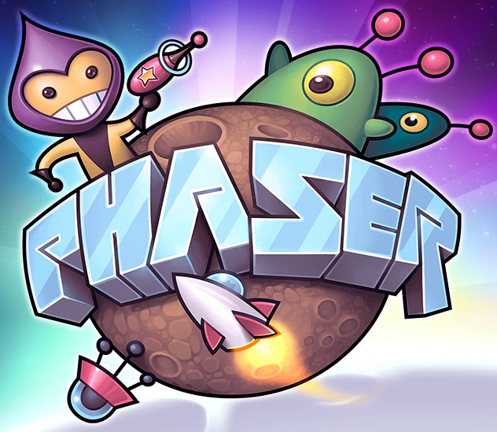
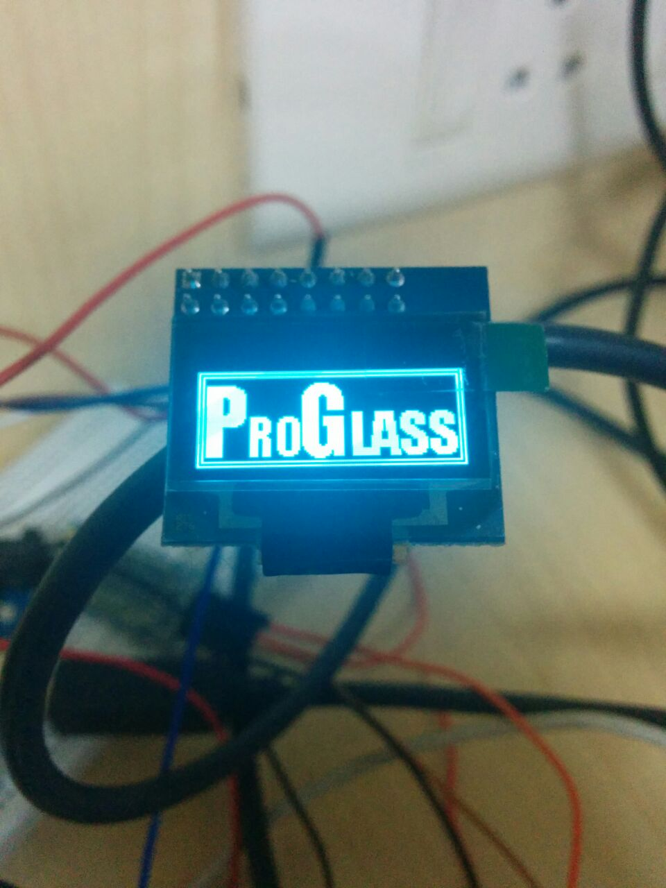
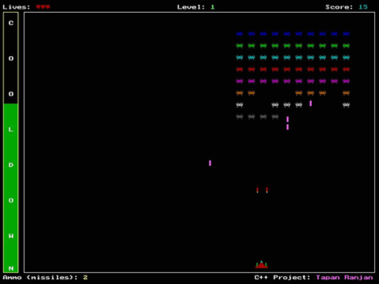

Artificial Life Simulator
A parameterized simulator showcasing flocking behaviour, decision making, pathing, etc. (Artificial Intelligence)
Click here to see it in action.
It is still a work-in-progress tech demo.
For this project I have used Phaser.io. Phaser is a cross-platform HTML5-Javascript based game engine. Which also works natively on mobile devices as well.

3D Puzzler (Unreal Development Kit)


An engine demo developed by a team of 4 students from VIT University showcasing capabilities of UDK. My responsibilites include texture designing (environment artist), kismet(scripting) and handling of general engine tools.
Tools used: UDK, Adobe Photoshop,Blender, SpeedTree,Adobe Photoshop,Audacity, CrazyBump.
Jul 14
Micro-controller and electroinc based projects
A propeller clock based on persistence of vision developed using embedded C and Arduino microprocessor.

Arduino is an openSource microprocessor which has a great and open community for anyone to learn coding and electronics. The modular and easy design of the board also allows for rapid prototyping of devices.

Browser based online multiplayer games


Multiplayer Chess and Connect4 were developed as projects for Software Engineering and Internet and Web programming courses and were team based, My responsibilities included writing the rules of the games, establishing node.js and mongoDB connections and also getting the apps on external servers for demonstrations and reviewing.
Tools used: Brackets IDE, MongoDB (js database), Node js (js Network engine).
May 2014
Space Invaders Clone
A clone of classic arcade game, using turbo-C++ and graphics.h. The clone is complete with main menu, pause screen, boss battles and high scores implemented.
Cick here for GitHub Dec 2011
Prototype filesystem

A prototype cross-platform file system made completely from scratch in C++ and SDL (OpenGL based game engine - used for GUI), The file system was based on FAT system (original windows filesystem). Improvements were made to the way the filesystem tree is stored reducing the amount of memory required, albit by very less. The project was made as a final project for an operating systems course.